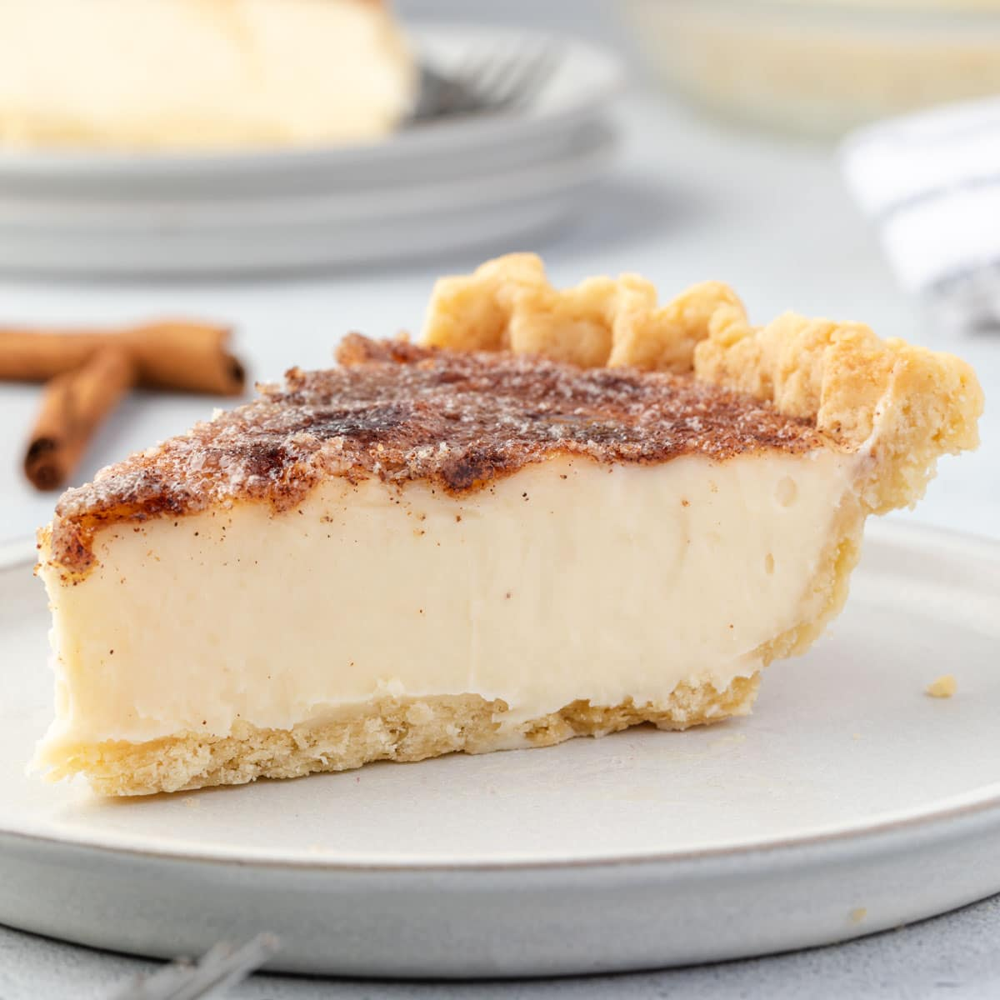

Home
Hoosier Cream Pie

Description:
Hoosier cream pie is a sweet custar delicacy made with simple ingredients, and is considered a desperation pie as it's made without eggs. It's a common place desert dish found in Indiana, the land of the Hoosiers.
Ingredients required:
- 1 cup whipping cream.
- 1 cup half and half coffee creamer.
- 3/4 teaspoon vanilla.
- 1 cup sugar.
- 1/4 teaspoon salt.
- 1 tablespoon butter.
- 1/2 teaspoon nutmeg.
- Pastry lined 9-inch pie pan.
Steps to make some Hoosier cream pie:
- Combine half and half coffee cream, whipping cream, and vanilla.
- in another bowl, combine flour, sugar, and salt.
- Slowly, using an electric mixer or a wire whisk, add cream mixture to the flour mixture until smooth.
- Let stand while rolling out the pastry crust.
- Line a 9-inch pie pan with pastry; dotting bottom with small pieces of butter.
- Spinkle nutmeg evenly over the bottom of the pie shell.
- Briefly beat the cream mixture again before pouring into the prepared pie shell.
- Bake at 450 degrees for 10 minutes.
- stir the filling and lower heat to 325 degrees.
- Bake 20-25 minutes longer.
- Shake the pie pan every 8-10 minutes while baking until done.
Serves 8, and enjoy a little slice of Indiana!